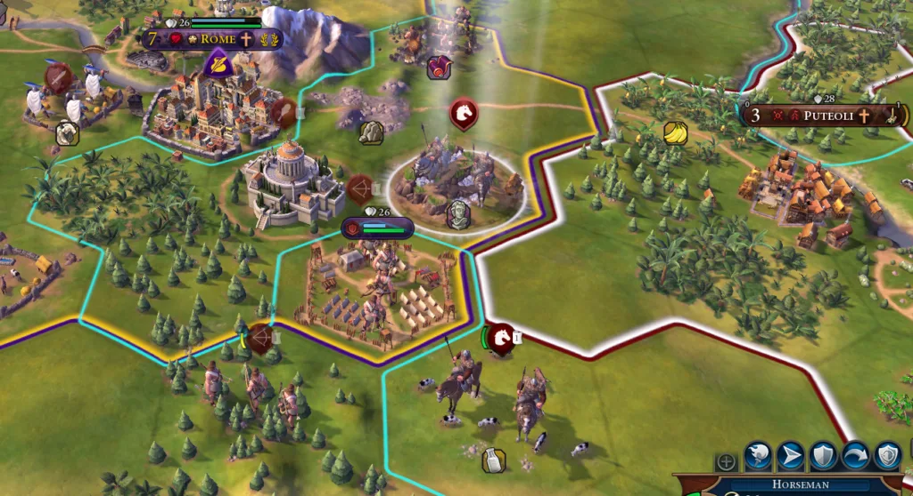
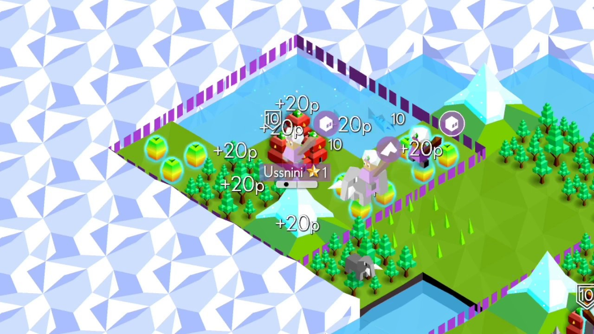

Civilization 6
Sid Meier's Civilization VI is a turn-based strategy 4X video game developed by Firaxis Games and published by 2K. The mobile port was published by Aspyr Media. The latest entry into the Civilization series, it was released on Windows and macOS in October 2016, with later ports for Linux in February 2017, iOS in December 2017, Nintendo Switch in November 2018, PlayStation 4 and Xbox One in November 2019, and Android in 2020.
Similar to previous installments, the goal for the player is to develop a civilization from an early settlement through many in-game millennia to become a world power and achieve one of several victory conditions, such as through military domination, technological superiority, or cultural influence, over the other human and computer-controlled opponents. Players do this by exploring the world, founding new cities, building city improvements, deploying military troops to attack and defend themselves from others, researching new technologies and civics advancements, developing an influential culture, and engaging in trade and negotiations with other world leaders.
Source: https://en.wikipedia.org/wiki/Civilization_VI
Fire Emblem Engage

Fire Emblem Engage is a tactical role-playing game developed by Intelligent Systems and published by Nintendo for the Nintendo Switch. It is the seventeenth installment in the Fire Emblem series, and was released worldwide on January 20, 2023. The game follows Alear, a dragon in human form, who awakens from a thousand-year slumber and quickly becomes embroiled in a conflict with the forces of the Fell Dragon Sombron. Alear travels the land of Elyos gaining allies while fighting against the armies of the rival Kingdom of Elusia and Sombron's resurrected undead forces; the player controls and maneuvers Alear's army in these battles. One of the core parts of both the setting and the gameplay are twelve magic rings that contain phantasmal copies of characters from previous Fire Emblem games. Characters wearing these "Emblem Rings" can "Engage" to gain vast power from summoning and merging with these phantoms. Both Alear and Sombron seek to gain control of the rings; possession of all twelve will allow a feat of immense magic to be performed.
Intelligent Systems designed the game to have a fresh new art style, with colorful characters and 3D animation models used wherever possible compared to earlier games in the series that would often show 2D still portraits for dialogue and the like. It was intended to be a heroic fantasy quest that followed a protagonist growing and maturing into a heroic role to save the world.
Source: https://en.wikipedia.org/wiki/Fire_Emblem_Engage
The Battle of Polytopia
The Battle of Polytopia is a turn-based 4X strategy game developed by Swedish gaming company Midjiwan AB. Players play as one of sixteen tribes to develop an empire and defeat opponents in a low poly square-shaped world. Players can play against bots or human opponents, local or online. The game was initially released in February 2016.
The Battle of Polytopia was initially released on iOS in February 2016 as Super Tribes. In June 2016, the game's name was changed to The Battle of Polytopia due to trademark issues. The game was released on Android on December 1, 2016. Online multiplayer was added on February 15, 2018. A desktop version using Steam was released on August 4, 2020. The game was added as a feature to Tesla cars on December 25, 2020.
Source: https://en.wikipedia.org/wiki/The_Battle_of_Polytopia